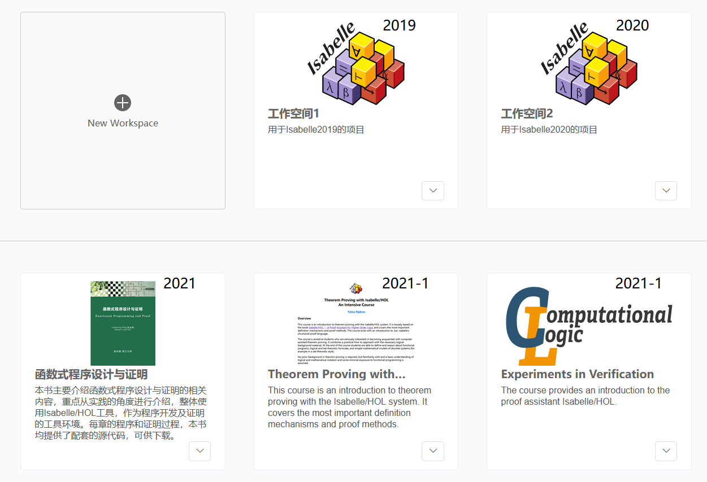
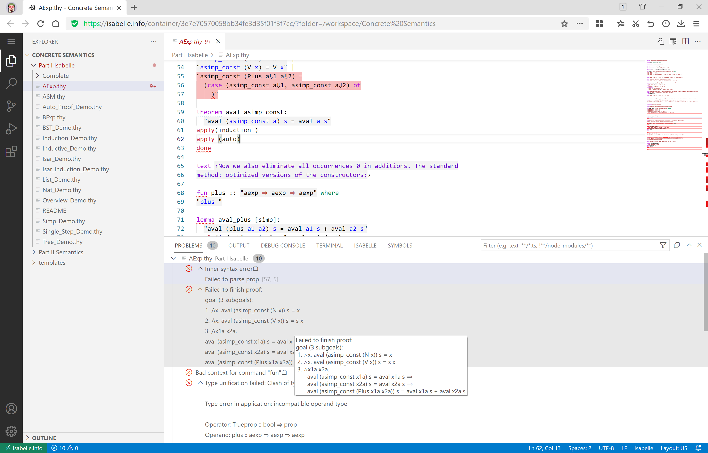
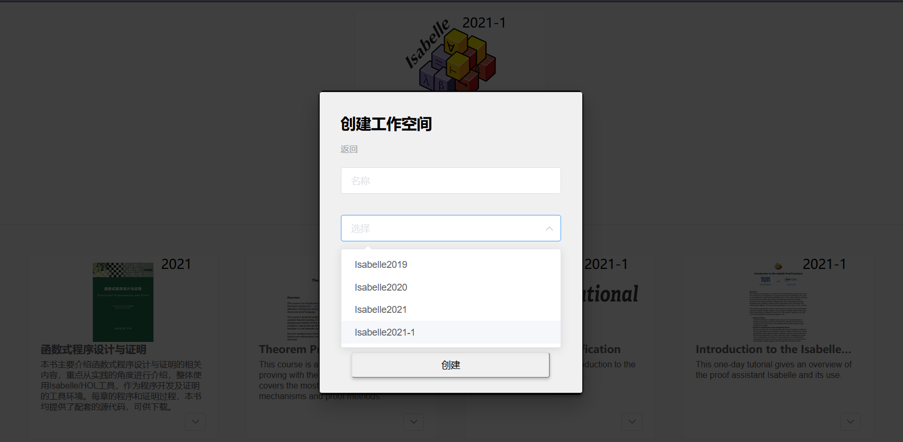
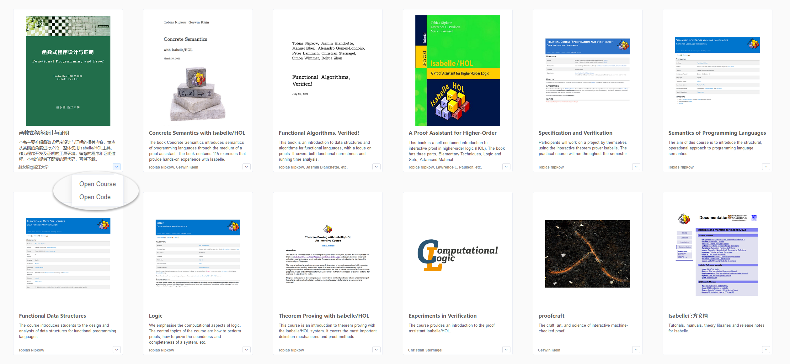

Please visit our official website https://isabelle.info/ for more information.
Introduction
Isabelle/Cloud is the cloud-based version of the Isabelle theorem prover, which offers users a web-based interactive interface based on VS Code. It containerizes Isabelle, allowing for better utilization of its powerful capabilities.
- Theorem Proving as a Service (TPaaS): The web frontend utilizes VS Code, eliminating the need for installing and maintaining a desktop IDE. The backend, Isabelle Server, is containerized using Docker, providing on-demand allocation of computational and storage resources.
- Deep Integration of Isabelle: The VS Code frontend is deeply integrated with Isabelle, providing syntax highlighting, real-time error detection for functional languages and proof scripts, and instant visualization of the theorem proving process.
- Multiple Versions on a Single Platform: It supports the latest versions of Isabelle, such as Isabelle 2019/2020/2021, allowing users to choose the desired version when creating a project.
- Powerful Project Management: Users can create multiple Isabelle projects, utilizing a Docker file system for isolation and management. Project resources and states are maintained and managed in the cloud, supporting hot reloading of projects.
- Pre-integration and On-Demand Loading of Third-Party Libraries: The platform comes pre-integrated with numerous third-party libraries, allowing users to selectively import and use them as needed during development.
- Rich Teaching Resources with IDE Integration: The platform gathers and organizes a wide range of instructional materials and case studies from both domestic and international sources. Users can directly create Isabelle projects from tutorial code, enabling hands-on practice and exercises. The integration with the IDE enhances the learning experience.
|  |  |
|  |  |
Publications
- Hao Xu, Yongwang Zhao#, "Isabelle/Cloud: Delivering Isabelle/HOL as a Cloud IDE for Theorem Proving", 14th Asia-Pacific Symposium on Internetware (Internetware 2023) , Fri 4 - Sun 6 August 2023 Hangzhou, China.
Introduction
The rely-guarantee approach is a promising way for compositional verification of concurrent reactive systems (CRSs), e.g. concurrent operating systems, interrupt-driven control systems and business process systems. However, specifications using heterogeneous reaction patterns, different abstraction levels, and the complexity of real-world CRSs are still challenging the rely-guarantee approach. PiCore is a rely-guarantee reasoning framework for formal specification and verification of CRSs, developed in Isabelle/HOL 2019. We design an event specification language supporting complex reaction structures and its rely-guarantee proof system to detach the specification and logic of reactive aspects of CRSs from event behaviours. PiCore parametrizes the language and its rely-guarantee system for event behaviour using a rely-guarantee interface and allows to easily integrate 3rd-party languages via rely-guarantee adapters. By this design, we have successfully integrated two existing languages, Hoare-Parallel and CSimpl, and their rely-guarantee proof systems without any change of their specification and proofs. PiCore has been applied to three real-world case studies, i.e. formal verification of concurrent memory management in Zephyr RTOS, Messaging System for Autonomous Vehicles, and a verified translation for a standardized Business Process Execution Language (BPEL) to PiCore.
The overview of PiCore can refer to the publications [1][2][3] below. We have publish a Chinese book on PiCore, which are available here.
PiCore has integrated two third-party languages:
- Hoare-Parallel: IMP is a simple imperative language with a rely-guarantee proof system provided by the Hoare_Parallel library of Isabelle/HOL releases. For more information of Hoare-Parallel, please refer to:
- Leonor Prensa Nieto. 2003. The Rely-Guarantee Method in Isabelle/HOL. In 12th European Symposium on Programming (ESOP). Springer Berlin Heidelberg, 348–362.
- Leonor Prensa Nieto. Verification of Parallel Programs with the Owicki-Gries and Rely-Guarantee Methods in Isabelle/HOL. Ph.D Thesis. 2002, Technische Universitat Munchen, Germany.
- CSimpl: CSimpl is a generic and expressive imperative language designed for modelling real world concurrent languages. CSimpl extends Simpl with concurrency, and provides a rely-guarantee proof system in Isabelle/HOL. Simpl is able to represent a large subset of C99 code and has been applied to the formal verification of seL4 OS kernel at C code level. For more information about CSimpl, please see the CSimpl block of this page.
Moreover, PiCore has been applied to three real-world cases:
- Concurrent Memory Management of Zephyr RTOS: We have applied PiCore to the formal specification and mechanized proof of the concurrent buddy memory allocation of Zephyr RTOS. The formal specification is fine-grained, providing a high level of detail. It closely follows the Zephyr C code, covering all the data structures and imperative statements present in the implementation. We use the rely-guarantee proof system of PiCore for the formal verification of functional correctness and invariant preservation in the model, revealing three bugs in the C code. For more information, please refer to the publications [3][4] below.
- Messaging System for Autonomous Vehicles: Messaging system as a communicating infrastructure is a safety-critical component of autonomous vehicles. We apply PiCore to formally verify the DGPS (Differential Global Positioning System) of UISEE autonomous driving systems. For more information, please refer to the publications [5] below.
- BPEL2PiCore Translator: BPEL aims to model the behaviour of processes via a language for the specification of both executable and abstract business processes. It extends the Web Services interaction model and enables it to support business transactions. We have applied PiCore to interpret the semantics of the BPEL language by translating BPEL into PiCore. To show the correctness of this translation, we prove a strong bisimulation between the source BPEL program and the translated PiCore specification. In this way, formal verification of BPEL programs can be conducted in the PiCore framework. The strong bisimulation implies the soundness and completeness of the formal verification of BPEL programs in PiCore. For more information, please refer to the publications [1] below.
Souce Code
The Isabelle 2019 sources of PiCore can be browsed on web here. Please contact me if you are interested the original Isabelle sources.
Publications
- Yongwang Zhao, David Sanan "Rely-guarantee Reasoning about Concurrent Reactive Systems: The PiCore Framework, Languages Integration and Applications", CoRR abs/2309.09148 (2023), [PDF download]
- Yongwang Zhao, David Sanan, Fuyuan Zhang, Yang Liu, "A Parametric Rely-guarantee Reasoning Framework for Concurrent Reactive Systems", 23rd International Symposium on Formal Methods (FM 2019), Oct 7-11, 2019, Porto, Portugal, pp. 161-178 (CCF A, Top-tier conference in formal methods )[PDF download]
- Yongwang Zhao, "Rely-Guarantee Reasoning About Concurrent Reactive Systems: Framework, Languages Integration and Applications (Invited Talk)", 6th International Symposium on Dependable Software Engineering: Theories, Tools, and Applications (SETTA 2020), November 24–27, 2020, Guangzhou, China. [PDF download] (CCF C)
- Yongwang Zhao, David Sanan, "Rely-guarantee Reasoning about Concurrent Memory Management in Zephyr RTOS", 31st International Conference on Computer-Aided Verification (CAV 2019), July 15-18, 2019, New York City, NY, USA, pp. 515-533 (CCF A, Top-tier conference in formal methods )[PDF download]
- Yongwang Zhao, David Sanan "Rely-guarantee Reasoning about Concurrent Memory Management: Correctness, Safety and Security", CoRR abs/2309.09997 (2023), [PDF download]
- Wenjing Xu, Yongwang Zhao#, Dianfu Ma, Yuxin Zhang, "Rely-Guarantee Reasoning about Messaging System for Autonomous Vehicles", 14th International Symposium on Theoretical Aspects of Software Engineering (TASE 2020), December 11-13, 2020, Hangzhou, China, pp. xxx-yyy (CCF C) [PDF download]
Introduction
It is essential to deal with the interference of the environment between programs in concurrent program verification. This has led to the development of concurrent program reasoning techniques such as rely-guarantee. However, the source code of the programs to be verified often involves language features such as exceptions and procedures which are not supported by the existing mechanizations of those concurrent reasoning techniques. Schirmer et al. have solved a similar problem for sequential programs by developing a verification framework in the Isabelle/HOL theorem prover called Simpl, which provides a rich sequential language that can encode most of the features in real world programming languages. However Simpl only aims to verify sequential programs, and it does not support the specification nor the verification of concurrent programs. In this paper we introduce CSimpl, an extension of Simpl with concurrency oriented language features and verification techniques. We prove the compositionality of the CSimpl semantics and we provide inference rules for the language constructors to reason about CSimpl programs using rely-guarantee, showing that the inference rules are sound w.r.t. the language semantics. Finally, we run a case study where we use CSimpl to specify and prove functional correctness of an abstract communication model of the XtratuM partitioning separation micro-kernel.
Souce Code
The Isabelle 2019 sources of CSimpl can be browsed on web here. Please contact me if you are interested the original Isabelle sources.
Publications
- David Sanan, Yongwang Zhao#, Yang Liu, Shangwei Lin, "CSim2 : Compositional Top-down Verification of Concurrent Systems Using Rely-Guarantee", ACM Transactions on Programming Languages and Systems (TOPLAS) , Vol. 43, No. 1, February 2021, pp. 2:1 - 2:46 . [PDF download]
- David Sanan, Yongwang Zhao, Zhe Hou, Fuyuan Zhang, Alwen Tiu, Yang Liu, "CSimpl: A Rely-Guarantee-Based Framework for Verifying Concurrent Programs", 23rd International Conference on Tools and Algorithms for the Construction and Analysis of Systems (TACAS 2017, ETAPS), 22-29 April 2017, Uppsala, Sweden, pp. 481-498 [PDF download]